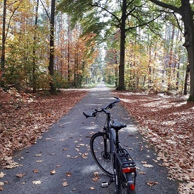
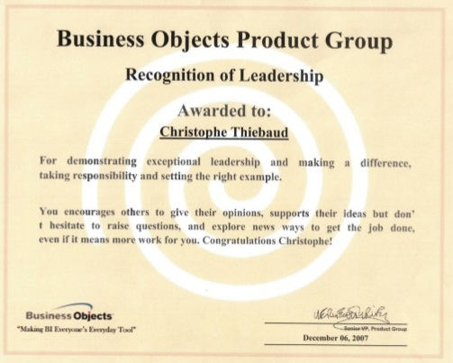
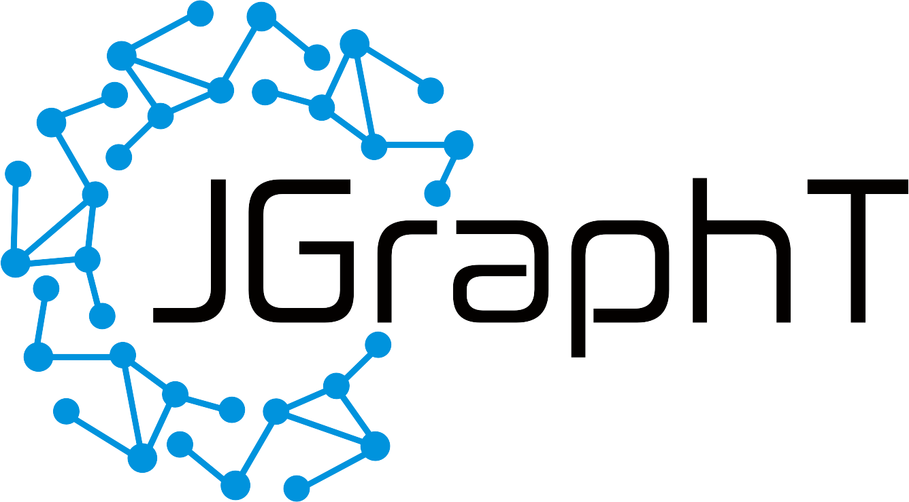

Christophe Thiebaud
I have been developing software since 1987, filling a number of different roles including Architect, People Manager, Project Manager, Lead Developer and Outside Advisor. What energizes me ? A challenging position where I am able to build on decades of experience in the creativity + technical expertise + people ecology bundle to deliver truly beautiful software.
Experience
Architect
Soft skills: Product Owner ; Internal Instructor ; DevOps ; Agile Processes & Scrum.
Hard skills: Cloud Services ; Git & Github ; Jenkins & Travis ; Docker ; Continuous Deployment.
Highlights:
- Starting in 2010-2011 in a Product Owner role for a team of ten people that provided tools and services to SAP development teams. As Product Owner, my main task was to define and prioritise the work items (Epics, User Stories, Tasks), within an Agile context, using Scrum.
- For the years 2012 - 2019 in a Architect role, my duties were:
- Design, develop and roll-out new software, used internally by hundreds of development teams.
- Contribute to SAP on-going thinking process about the evolution of the technical environment for developer tools. Evaluation of new 3rd party products, as well as migration of existing tools to new architectures.
- Consulting to other development teams, especially on complex projects where our standard tooling was stretched to its limits, and development and delivery of custom solutions was necessary. Those customizations usually took the form of cloud services, using REST apis and web UXs, à la intranet.
- Product Owner for such a cloud based/rest api/web-ux internal product, aimed to enable development teams to take control of their internal and external software dependencies. Software releases that could take several days before were squeezed to a matter of hours.
- During the 2018-2019 years, a significant part of my activity has been training hundreds of SAP developers in a course called "Continuous Integration and DevOps", the name says it all.
- Since January 2020 on a pre-retirement program.
Manager
Soft skills: Managing People ; Managing Customer Escalation ; Rolling out Engineering Processes and Tools, Worldwide.
Hard skills: REST API design ; System Performance Management.
Highlights:
- Main driver for the design, development and roll-out of a customer patch release process, called "Cumulative Patch Process". Weekly patch release variance down to 1 day from 1 week.
- Leaded design, development and roll-out of a central Build Reporting System, federating a zoo of technologies under a unified UX.
Team Lead
Soft skills: Web UXs design; Using and contributing to open source software.
Hard skills: Linux & shell programming ; Java ; Javascript ; HTTP & HTML & CSS ; Web Servers (Tomcat & Websphere) ; Maven ; XML ; Digital Signature.
Highlights:
- As employee #2 of Unimatica, tecnical responsible from scratch to delivery of an innovative web-based solution that substituted digital to previously physical signature of students diploma by teachers, reducing bureaucracy and saving time. The product won an innovation award from the Italian Ministry of Industry.
Consultant
Soft skills: Selling myself ; Selling one same software component to multiple customers.
Hard skills: Microsoft APIs and tools ; Game Programming ; Graph Algorithms.
Highlights:
- The vast majority of the work I did in those years was with Microsoft APIs and tools.
- In particular, we had to escalate a particular bug with a Microsoft API all the way from standard support up to the developers themselves, giving me a good overview of the whole Microsoft support organization. For your records, the eventual fix for the bug was to disable a failing optimization by entering a purposedly wrong value for a function parameter! No mystery that "enter wrong value" could not be stated in the documentation 😉.
Project Manager
Soft skills: Juggling with external contractors ; Juggling with internal politics.
Hard skills: n/a.
Coder
Soft skills: Humility (being sold to customers as OOP guru after only a few month of self training) ; Team Lead.
Hard skills: Windows & OS/2 SDKs ; C & C++ ; Relational Databases & SQL ; System Integration.
Support Technician
Soft skills: The Customer Is Always Right.
Hard skills: Everything (answering a wild variety of questions at the hot-line).
Education
Interests
-
Music
In addition to being a geek, I am a fine guitar player, with a strong focus on JS Bach music (google for Thiebaud+Bach).
-
Bike
~ 4000 kms per year, mostly commuting.
 -
Favourite Quotes
- « Why program by hand in 5 days what you can spend 5 years of your life automating ? »
Terence Parr - « So convenient a thing it is to be a reasonable creature, since it enables one to find or make a reason for everything one has a mind to do. »
Benjamin Franklin - « Triple-double-quoted strings behave like double-quoted strings, with the addition that they are multiline, like the triple-single-quoted strings. »
Groovy programming language documentation - « Without the ball, you can't win. »
Johan Cruyff
- « Why program by hand in 5 days what you can spend 5 years of your life automating ? »
Awards & Certifications
- Business Objects Leadership Award
- 
- Proud to be a jgrapht contributor (google for thiebaud+jgrapht).
- 